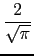
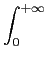
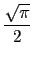
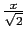
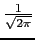
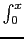
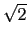
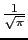
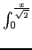

suivant: La fonction erfc :
monter: Les réels
précédent: La distribution de Dirac
Table des matières
Index
La fonction erf : erf
erf a comme argument un nombre a.
erf calcule les valeurs de la fonction erf au point a.
On a par définition :
erf (
x) = 
 e-t2dt
e-t2dt
On a :
erf (+ ) = 1
erf (- ) = - 1
En effet on sait que :
e-t2dt = 
On tape :
erf(1)
On obtient :
0.84270079295
On tape :
erf(1/(sqrt(2)))*1/2+0.5
On obtient :
0.841344746069
Remarque
Il y a une relation entre les fonctions erf et normal_cdf :
normal_cdf
(x) = + &sstarf#star;erf
()
En effet :
normal_cdf
(x) = + e-t2/2dt
donc avec le changement de variables
t = u* on a :
normal_cdf
(x) = + e-u2du = + &sstarf#star;erf
()
On vérifie en tapant :
normal_cdf(1)=0.841344746069
Documentation de giac écrite par Renée De Graeve